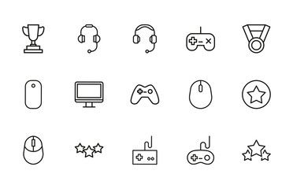
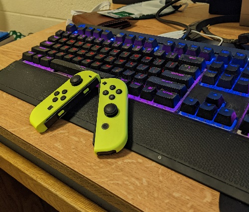
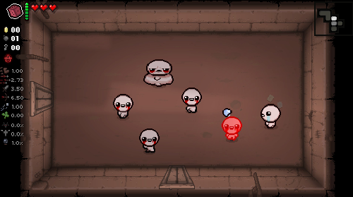
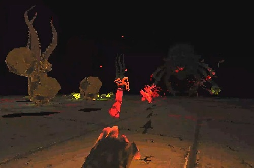
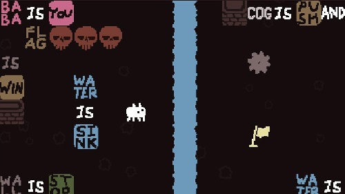
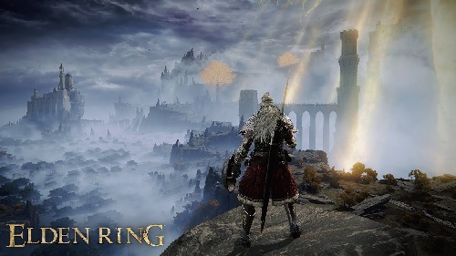
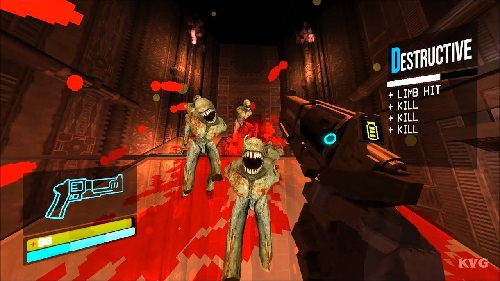
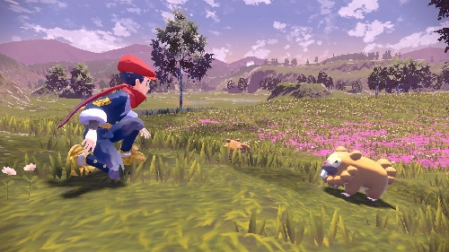

Home Page
Hello! My name is Ronnie Johnston and this site is dedicated to my passion for video games! Here you'll find the kind of games I like, the systems I mainly play on, and my history with video games.
Currently, I am studying to become a software engineer, but I have interest in the construction and design of video games. I mainly play single player and co-op games. If anyone wants to talk video games with me my Discord is @Generic#9454.
Systems
Currently, I play exclusively on PC and on Nintendo Switch. The main reason why I like these two systems the most is because PC has the flexibility to customize games to my liking, while allowing me to easily switch between programs. I like the Switch because it has, in my opinion, a fantastic library of games while remaining portable.
I do need to upgrade my PC at some point in the future. Currently I am running a Ryzen 5 2600 || RX 580 4GB with only 8GB RAM (yikes!)
Current Favorite Games
My most played game right now, and one of my all-time favorites is The Binding of Isaac: Repentance. If you haven't heard of it, it's a twin-stick roguelike, which means no two playthoughs of the game are identical. The amount of content in this game is impressive, with over 600 different achievements. It took me over 1,100 hours to complete it all, so keep that in mind if you are a completionist!
As a warning, the game is not afraid to utilize gross and horrifying subjects (M rated), and the game does touch on religion and it's effects on the protagonist, Isaac. Moving past that, it is a game that I constantly find myself always coming back to. Finished all my work for the day? Play a round of Isaac. Tired of another game? Start an Isaac run. Want to play a fun co-op rougelike with friends? Isaac has that, too! Seriously, I could talk about this game for hours, but we have more to get to!

Next up is Devil Daggers. I'm warning you up front, this game is HARD. To sum it up, you are placed in a circular arena, with hordes of demon skulls spawning in with a single objective: to hunt you down. As more waves come in, their numbers and difficulty increase. And your arsenal of weapons? A hand that can shoot daggers, that's all. Note how I haven't mentioned HP yet, because it doesn't exist. One hit from anything and it's back to the start!
This is one of those games that make you feel like you are always on the brink of being overwhelmed. It's also one of those games that is hard to put down when you pick it up, as there is a leaderboard system that you are constantly trying to move up over time. The longer you survive, the higher up on the leaderboard you'll be. Most lie within 60-200 seconds, and the current world record time is over 1200 seconds! As you play more, you'll start to notice subtle details placed to help you. EVERY enemy type has a different, distinct sound they make, and if you are wearing headphones you can start to tell when you are in danger, but more importantly, where that danger is coming from and what type it is.
There's countless things in this game that show the people behind it knew how to develop a phenomenal first-person arena shooter. Just like Isaac, I could talk about these details forever, but I'll just leave you with this video discussing the beauty of this game.

The last one I want to talk about is Baba is You. This is a puzzle game where you control (or sometimes don't control) a character named Baba (or sometimes something entirely different). The reason why I'm being ambiguous is because the point of the game is to modify the game's rules to solve puzzles. At one point you could be controlling Baba, pushing words together like they're puzzle pieces, and at a later point you might be controlling those words pushing Baba using the walls of the level. It's one of those types of games that were made not just to blow your mind, but demonstrate the puzzle-making prowess of the developers.
Now admittedly I am not that great at puzzles, so I usually get to a certain point where then I get stuck and have to look up a guide. Personally, even if I have to use a guide, I admire the amount of thought put into each level of this game. Once you find the solution to a level, you'll almost be guaranteed to have a face of "a-ha!"
Some other games I love:
- Metroid: Dread
- Dishonored
- Cuphead
- Super Smash Bros. Ultimate
- Black Mesa and Half-Life 2
- Halo: MCC
- Terraria
- Minecraft
- EarthBound
Game Wishlist
A game I've been meaning to try out is Elden Ring. I like games that really make you work hard for victories, and it comes as no shocker that the successor to the Dark Souls franchise is a really punishing one.

ULTRAKILL is a game that looks really fun to play. It seems to blend old-school first person shooters with new-age movement to create a fluid experience. It seems like it would be one of those good "stress-relief" games.

Pokemon Legends: Arceus was something I wasn't looking forward to playing early on, given that it looked rushed during it's initial announcement, but everyone I know that's played it says it's really good. I'll have to give it a try.